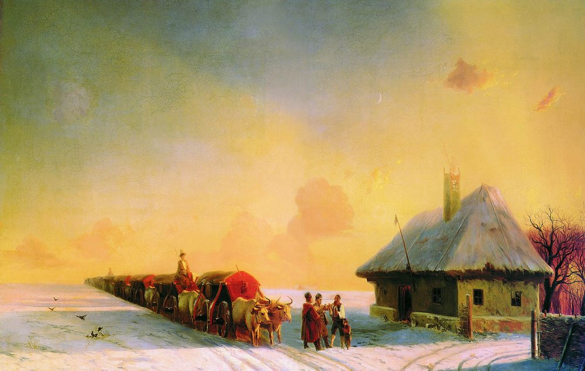

Salt Trade. Salt was an expensive commodity in early modern Europe. Cossacks harvested salt, controlled salk trade in Southern Ukraine and Russia; they heavily interacted with the Chumaks, a famous class of independent Ukrainian merchant-transporters (who specialized in salt trade).
An Inclusive Class: Chumak society bypassed traditional feudal barriers. Anyone who could afford an ox and a cart could join—ranging from wealthy peasants and townspeople to Cossacks and even serfs working to pay off their taxes. The trade was so lucrative that successful Chumak families often stopped farming entirely, relying solely on trade profits. Chumaks cooperated with cossacks (who provided armed protection) on running trade roots on the rivers.
The Chumaks impact on Ukrainian culture is literally written in the stars: in Ukraine, the Milky Way galaxy is traditionally called "The Chumak Way." Folklore says the galaxy was formed when traveling Chumaks accidentally spilled a trail of white salt across the night sky as a glowing roadmap to guide them home
My mom's maiden name is Chumachenko. She was from a family who historically was part of the salt traders' community from the town of Guliai Pole, Ukraine.

Fig.1 Chumaks from Ukraine (artist Aivazovsky 1885)